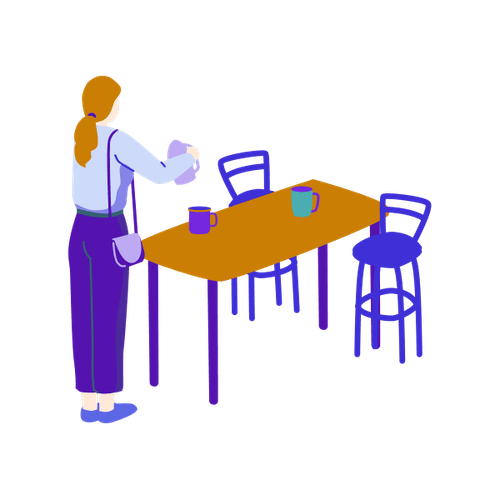

Mit der Academy erhaltet ihr im Business-Plan praxisnahe Lernmodule rund um Facilitation und wirksame Transformation.
Gemeinsam mit 9 Spaces zeigt Plan International Deutschland, wie wertebasiertes Arbeiten Orientierung gibt – nach innen wie nach außen.
Dieses Tool hilft Führungskräften dabei, Reibungen und sich anbahnende Konflikte im Team zu klären, bevor sie sich verhärten.
Dieses Tool hilft euch, Fehler konstruktiv aufzuarbeiten und daraus zu lernen.
Gestaltet ein unternehmensweites Meeting, das Orientierung gibt und relevante Informationen für alle Mitarbeitenden bündelt.
Dieses Tool unterstützt dich als Führungskraft, Aufgaben strukturiert an die passende Person im Team zu übergeben.
Eine einfache Struktur für situatives und konstruktives Feedback im Arbeitsalltag.
Wie du als Führungskraft das Exit-Gespräch für eine gelungene Übergabe und Wertschätzung nutzt.

Dieses Tool hilft euch dabei, in einer lockeren Atmosphäre Wissen mit anderen zu teilen.
Dieses Tool hilft dir, andere so um Unterstützung zu bitten, dass keine Fragen offen bleiben.
Mit diesem Tool könnt ihr die zentralen Spannungsfelder in eurer Organisation besser verstehen und in eine produktive Balance bringen.
Mit diesem Tool schafft ihr ein einfaches System, um Fachwissen und Erfahrungswerte zu teilen.